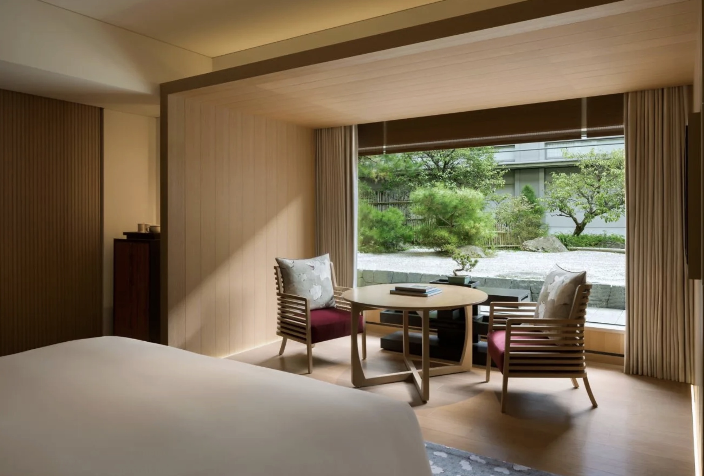

Riverside, walkable, and classically “hotel” in feel — the central Kyoto base with full-service consistency.
The Ritz-Carlton, Kyoto is the practical anchor of my Japan shortlist: riverside on the Kamogawa, walkable to the city's heart, Forbes Five-Star, and more classically "hotel" in feel than either of my other Kyoto picks.
That's not faint praise — it's a specific recommendation. Kyoto days are long and layered, and there's real value in coming home to full-service consistency: concierge depth, dining on-site, and a team that solves problems the way the world's best city hotels do.
For first visits to Kyoto especially, I often split the argument this way: stay here for the walkable base, and let me build the serenity into the days — private tea ceremonies, temples before the crowds, the right guides throughout.

The riverside location. On the Kamogawa with the city walkable in every useful direction — the best pure base in Kyoto.
Full-service consistency. The classic-hotel machinery that makes a dense Kyoto itinerary run without friction.
Forbes Five-Star execution. Independently rated at the level my clients experience.
It's a hotel, not a hideaway. Travelers chasing the transporting-sanctuary feeling should look at Aman Kyoto — this property's gift is convenience done impeccably.
Ideal for mixed groups. Families and multigenerational trips do better here than at either of my other Kyoto picks.
Pair it with Tokyo deliberately. Kyoto's classicist matches Tokyo's — The Peninsula — for a first-timer's itinerary I've built many times.
For a central base with full-service consistency, this is the Kyoto hotel I book first-time visitors into without hesitation.
Rates through me are identical to booking direct — the perks are not. As a Fora advisor, my clients receive a space-available upgrade, daily breakfast, and a hotel credit — plus my direct line to the team on property before and during your stay.
Check Availability